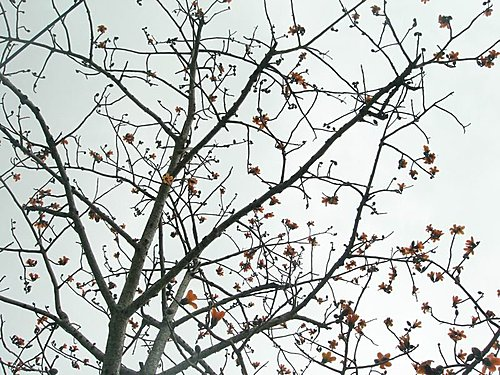
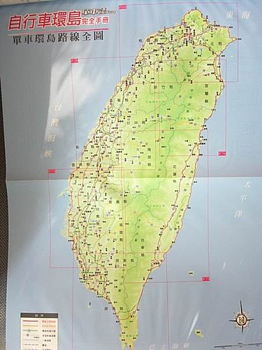
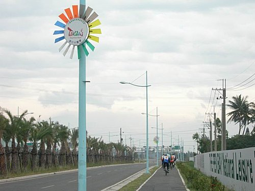
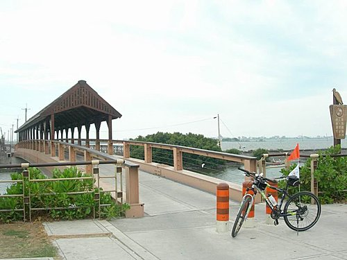
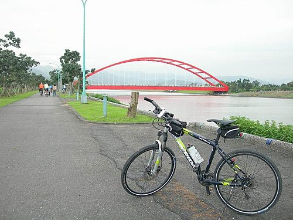

生長在這塊土地上，
你是否曾想過挑戰單車環島呢?
河東獅自行車隊自成軍以來，
眾獅友們不斷有這樣的夢想，
但夢想可以很遙遠，
也可以伸手可及，
當大家都還在懷疑，
自己是否有能力完成千里的環島行程時，
「小紀」學長的登高一呼，
大家才發現，
原本遙遠的夢想，
只是一個轉念間的距離。
願意放下，
勇敢嘗試，
或許生命就會開啟新的一扇窗。
單車環島的本質，
即為最夯的「壯遊」理念。
所謂壯遊指的是胸懷壯志的遊歷，
包括三個特質：
旅遊時間「長」，
行程挑戰性「高」，
與人文社會互動「深」，
特別是經過規畫，
以高度意志徹底執行。

當大家決定這遭「壯遊」之旅後，
自我體能的紃練課程於是展開。
說實在的，
河東獅車隊的環島之旅，
首先要感謝提議倡導的「小紀」學長，
因它讓我們庸庸碌碌的生活作息有了轉變，
也讓大家下定決心堅持運動，
而這份挑戰，
更讓平淡的生活多了一些期待。

我的朋友們，
在此與您分享河東獅今年春天的美好記憶，
願大家都有無悔無憾的美好人生。

98春.河東獅環島圓夢之旅—九天流程圖--總里程992公里
|
|
早餐 |
行程 |
午餐 |
行程 |
晚餐 |
住宿 |
房型及間數 |
日行公里數 暨備註 |
|
3/6(週五)約118公里 |
自理 |
鳳山.-台25-林園接台17( 84公里 ) |
車城 熊家豬腳 |
屏153號海生館-萬里桐-後壁湖—龍鑾澤( 34公里 ) |
飯店2500元桌菜.送飯料1瓶 |
四重溪南台灣飯店 |
2人房5間.每房2100元08-8822211 |
附泡湯. |
|
3.7(星期六)—約107公里 |
飯店早餐 |
屏199縣道-石門-牡丹東源(哭泣湖)-壽卡達仁-( 50公里 ) |
大武—超商午餐 |
大武—金崙—大麻里—知本（約57公里 ） |
飯店2500元合菜 |
知本 統茂溫泉飯店 |
2人房5間.每房2600元089-510188 |
附泡湯. |
|
3.8(星期日)—134公里 |
飯店早餐 |
台9初鹿—鹿野--關山—池上( 70公里 )
|
池上便當 |
富里—安通—接193縣道—瑞穗( 64公里 ) |
飯店晚餐2500元桌菜，含水果 |
瑞穗—吉祥庭園溫泉 |
2人房2間.3人房2間.03-8876866-9 |
附泡湯. 1250*10（2人及3人房） |
|
3.9(星期一)—115公里 |
飯店早餐 |
.193縣道—鶴岡—自強外役監—富田—米棧部落（60公里） |
大腸麵線.臭豆腐 |
花蓮大橋--花蓮港—七星潭—三棧—接台9線--新城—太魯閣( 55公里 ) |
花蓮市大餐 |
新城大魯閣走過紅橋民宿 03-8621328 |
2人房5間.每房1900元 |
超優民宿 |
|
3.10(星期二)—75公里 |
飯店早餐 |
中橫東段燕子口來回25公里 崇德—全部上車(清水斷崖( 12公里 ) |
南方澳海鮮大餐 |
南方澳—冬山河—公館—大福—竹安—接宜4縣道--礁溪( 50公里 ) |
附近晚餐 |
礁溪三光溫泉飯店 03-988-2128.礁溪鄉礁溪路5段85號 |
雅緻3間 1320*3 閤家2間1540*2 |
含泡湯，不含早餐 |
|
3.11（星期三）--65公里 |
附近早餐 |
台9線--二城--接北宜公路-石牌—坪林( 30公里 ) |
坪林午餐 |
坪林河濱自行車道--小格頭—新店碧潭橋( 35公里 )—全部上車 |
1213民宿晚餐.2500元 |
桃園觀音鄉1213民宿.03-4736922. |
203.(7人和室)205.206.(2人)207(5人檜木).4間共7千元 |
附早餐.. 0910939601邱奕強. |
|
3.12(星期四)—110公里 |
飯店早餐 |
台15線-永安-新豐-南寮-海八景專用道( 17公里 )—香山—約50公里 |
老鍋農場—新竹米粉.貢丸湯 |
接61線--竹南-白沙屯-接台1線通宵-苑裡-大甲( 60公里 ) |
大甲鎮瀾宮附近晚餐 |
台中大甲夏威夷汽車旅館.大甲鎮中山路1段1200號. |
2人房3間.1980*3單人房2間1580*3 |
房間寬敞.氣氛佳.附按摩浴缸.按摩椅 04-26862286 |
|
3.13(星期五)—149公里 |
飯店早餐 |
甲南-接台17-台中港—梧棲-線西-鹿港—王功( 60公里 ) |
王功海鮮餐 |
西濱大橋-五條港-金湖-東石( 89公里 ) |
東石港海鮮餐2500
|
東石靜心民宿.嘉義東石鄉船仔船休閒村25號.05-3702788 |
2人房3間.3人房1間1600*4 |
過嘉雲大橋(鰲鼓溼地)請老板林鴻騰帶路 |
|
3.14(星期六)—119公里 |
飯店早餐 |
布袋—北門—七股-台南安平( 60公里 ) |
安平午餐 |
茄定情人碼頭-永安—彌陀-梓官-左營蓮池潭服務中心 |
自理 |
可愛溫暖的家 |
|
車資：5000*9*0.9＝4萬即可 |

一、 參加人員：(9人+司機1人共10人)
A隊：1.小紀2.超哥3.小揚.4.貓哥.5.木白
B隊：1.山哥2.1213.3.LILY4.小獅
二、 集合地點：早上7點鳳山
終點站：左營蓮池潭服務中心(預計下午5點到達)
三、 注意事項
1. 請檢查自行車全套裝備
2. 公用器材(隊旗.備胎.打氣筒)、補給品、行李皆由補
&n